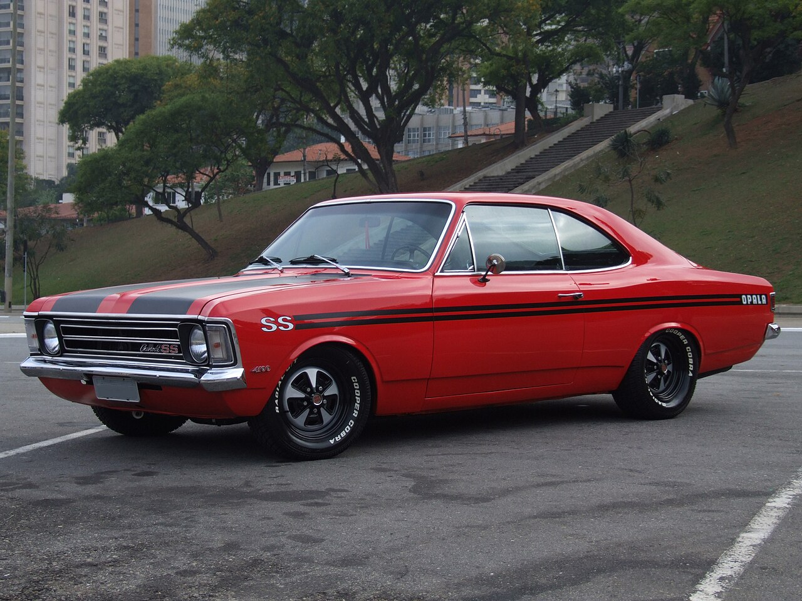

поскольку Opal — один из самых знаковых автомобилей 80-90-х годов.
Chevrolet Opala — первый легковой автомобиль, разработанный и производившийся General Motors do Brasil с 1968 по 1992 год.[1]
Выпущенный как конкурент Ford Galaxie и Dodge Dart, Opala был представлен бразильской публике на автосалоне в Сан-Паулу в 1968 году. Его кузов был вдохновлен немецким Opel Rekord, но со стилем и механикой североамериканского Chevrolet Impala, из-за чего автопроизводитель назвал его аббревиатурой Opala (Opel+Impala).[2][3] Он был быстро принят публикой и стал устоявшейся моделью.
У него было несколько применений, например, в качестве частного автомобиля и полицейской машины. Спустя более двадцати лет после выпуска модель до сих пор используется в качестве повседневного автомобиля, а также завоевала престиж коллекционного предмета.

В то время как Форд с 1965 года планировал выпуск роскошного седана
на базе американского Galaxie, General Motors отреагировала только после запуска бразильского Galaxie на V автосалоне в Сан-Паулу в 1966 году.
Для ускорения своего развития новая модель, названная проектом 676,
была основана на выпущенном в Германии в 1967 году Opel Rekord Series C. Однако первой проблемой немецкого
проекта было использование метрической системы единиц измерения, тогда как в Бразилии General Motors использовала
британскую систему. Чтобы воспользоваться преимуществами существующего в стране механического и двигательного комплекса,
завод принял в новой модели необычную конфигурацию: задняя половина была основана на Rekord,
с деталями, построенными в метрической системе, а передняя половина использовала конструкции американского Chevrolet Impala,
выполненного в имперской системе. Принятие двух элементов в проекте вынудило General Motors сохранить две сборочные линии для Opala,
и эта проблема была решена только в 1979 году с унификацией метрической системы.